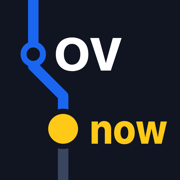

The mail to testers announcing OV-fiets now and nOVa. Tick the building blocks you want, the concepts you like, the parts you would borrow and any subject lines. Then hit the button at the bottom and paste the result to Claude. All numbers, names, stations and times are examples. Nothing here is sent.
What the mail is made of. Five are ticked as a starting point.
Each one drawn as it would look in Apple Mail. Light mails sit on a white body so they hold up in light clients; concept 12 is the navy style of the earlier mailings. Width 600, scaled down on phones.
+ One huge fact grabs you in the inbox preview. - The number is live data; a frozen number in a mail can look wrong a day later.

Every station now shows how many OV-fiets are available, live. Tap it to see the locations, find the bikes on the map, and pick Continue by OV-fiets in your route. There is a Home Screen widget too.
Data from NS. Even the NS app doesn't show this.
Also new: nOVa. Type or say "Amsterdam Zuid to Rotterdam Centraal" and she plans it. Say "later" for the next one.
Update in TestFlightUpdate in TestFlight, don't delete and reinstall the app.
PS from Frey: I checked Zuid at 23:40 last night. 12 left. It works.
IN HET NEDERLANDS
17 OV-fietsen klaar op Ede-Wageningen. Elk station laat nu live zien hoeveel OV-fietsen er zijn. Tik voor de locaties, zie ze op de kaart en kies Verder met OV-fiets in je route. En nieuw: nOVa, je assistent. Update via TestFlight, verwijder de app niet.
+ Shows exactly where it lives in the app; no guessing. - Needs a real screenshot per language; images are blocked in some clients.
Your station, now with bikes
1 OV-fiets now count and opening hours on every station.
2 Tap a platform number to see that platform's sign.
3 OV-fiets locations on the map.
Data from NS. Even the NS app doesn't show this.
And meet nOVa, the OVnow assistant. Plan in plain words or with the mic, and report problems.
Update in TestFlightUpdate in TestFlight, don't delete and reinstall the app.
+ Warm, gives nOVa a character from day one; the mail itself is the demo. - OV-fiets, the bigger news, has to come out of her mouth too.
Tell me where you want to go, the way you'd say it to a friend. "Amsterdam Zuid to Rotterdam Centraal." "Tomorrow at 7 to Utrecht." Not that one? Say "later". You can also just tap the mic and talk.
Something wrong on your trip? Tell me that too, and I pass it on.
And I can see bikes now. Every station shows how many OV-fiets are free, live, with opening hours. If one fits your trip, I'll say Continue by OV-fiets.
Update in TestFlightUpdate in TestFlight, don't delete and reinstall the app.
See you on the line,
nOVa
Zeg me waar je heen wilt, zoals je het tegen een vriend zou zeggen. "Amsterdam Zuid naar Rotterdam Centraal." "Morgen om 7 naar Utrecht." Niet die? Zeg "later". Of tik op de microfoon en praat gewoon.
Gaat er iets mis onderweg? Zeg het ook tegen mij, dan geef ik het door.
En ik zie nu fietsen. Elk station laat live zien hoeveel OV-fietsen er vrij zijn, met openingstijden. Past er een in je reis, dan zeg ik Verder met OV-fiets.
Update via TestFlightUpdate via TestFlight. Verwijder de app niet om hem opnieuw te installeren.
Tot onderweg,
nOVa
+ Shows what to type without explaining it; feels like the app. - Bubbles built from tables need care in Outlook; long if you add everything else.
MEET NOVA
A chat that plans your trip
Type it or tap the mic. You can report problems to nOVa too. And every station now shows OV-fiets now, data from NS.
Update in TestFlightUpdate in TestFlight, don't delete and reinstall the app.
+ Instantly "public transport", fun to scan; each row is one feature. - Board style is busy; the board must stay readable as live text, not an image.
| Now | OV-fiets now | every station | 1 |
| Now | nOVa | chat + mic | 2 |
| +3 | Supplement label | IC direct | 3 |
| +5 | Platform signs | tap the number | 4 |
Platform 1: OV-fiets. Every station shows live how many OV-fiets are free and until when it's open. Tap for the locations, see the bikes on the map, pick Continue by OV-fiets in your route, or put it in a widget.
Platform 2: nOVa. Plan in plain words: "tomorrow at 7 to Utrecht". Say "later" for the next one. Report problems. Or talk with the mic.
Update in TestFlight, don't delete and reinstall the app. Nederlands
+ Feels considered and calm; room for one lead story and a sidebar of small things. - More reading; the serif face differs from the app.
LEAD STORY
The last mile is a bike, and now you can see it coming
Every station in OVnow now shows how many OV-fiets are free, live, and until when the shop is open. Tap it for the locations. Plan a trip and the app offers Continue by OV-fiets. Put it on your Home Screen as a widget. The data comes from NS. Even the NS app doesn't show this.
ALSO
Meet nOVa
A chat for planning in plain words, with a voice if you want one. "Tomorrow at 7 to Utrecht." "Later." And the place to report what went wrong.
"Supplement" on the IC direct
Bike routes, in Settings
Add to Calendar
Tap a platform, see its sign
Liquid Glass trip card
Editor's note: two of the fixes in this update came straight from your feedback. Keep it coming. Frey
Update in TestFlightUpdate in TestFlight, don't delete and reinstall the app.
+ Most personal; lands in Primary, not Promotions; replies feel natural. - No visuals, so OV-fiets has to sell itself in words.
Hoi,
Je kent het: trein uit, naar het OV-fietsenhok, en dan blijkt het leeg. Vanaf deze update zie je in OVnow bij elk station hoeveel OV-fietsen er vrij zijn en tot hoe laat het open is. Live, van NS. Zelfs de NS-app laat dat niet zien.
Er is ook iemand nieuw: nOVa. Typ of zeg gewoon "morgen om 7 naar Utrecht" en ze plant het.
Update via TestFlight: testflight.apple.com/join/...
Verwijder de app niet om hem opnieuw te installeren.
Iets kapot of raar? Antwoord gewoon op deze mail.
Frey
--- English ---
You know the feeling: off the train, to the OV-fiets shed, and it's empty. From this update, OVnow shows how many OV-fiets are free at every station and until when it's open. Live, from NS. Even the NS app doesn't show that.
There's someone new too: nOVa. Type or say "tomorrow at 7 to Utrecht" and she plans it.
Update in TestFlight: testflight.apple.com/join/...
Update in TestFlight, don't delete and reinstall the app.
Something broken or odd? Just reply to this mail.
Frey
+ Fits all the small features without a wall of text; easy to skim. - Everything looks equally important; the two headliners lose some punch. Stacks to one column on phones.
Plus: "Change not possible? Find another connection", a pop-up when something is broken on our side, and the iPhone Duo closed-screen layout.
Update in TestFlightUpdate in TestFlight, don't delete and reinstall the app. · Nederlands
+ Proves you listen; testers see their own report fixed, which makes them report more. - Leads with fixes, so the OV-fiets news comes second.
Before and after
Two things you told us about, both fixed in this update.
Thanks to everyone who sent these in through TestFlight.
New too: OV-fiets now at every station, and nOVa, the assistant you can just talk to.
Update in TestFlight, don't delete and reinstall the app. · Nederlands
+ Complete and honest, testers like knowing everything; cheap to make every update. - Dry; nothing says "this one is special".
NEW
IMPROVED
FIXED, FROM YOUR FEEDBACK
Update in TestFlight, don't delete and reinstall the app.
+ Highest response; the question itself tells you what's new. Bilingual line by line. - The update button sits lower; some people tap the poll and stop there.
Which do you use most?
Wat gebruik jij het meest?
One tap, anonymous. / Eén tik, anoniem.
Haven't tried the first two? They're in the new update.
Nog niet geprobeerd? Ze zitten in de nieuwe update.
Update in TestFlight, don't delete and reinstall the app.
Update via TestFlight, verwijder de app niet.
+ The exact look of the earlier mailings (navy in every client), so it feels like OVnow straight away. - Familiar, so less of a "this one is big" moment.
+ Shows every new feature in the order you'd meet it; uses the brand line and stop rings. - Longest to read; works best if the trip feels real.
One evening, one trip
Update in TestFlight, don't delete and reinstall the app.
+ Answers the questions testers actually ask ("do I need to reinstall?"); very clear. - Less exciting as an opener; questions feel invented if too many.
What's the big one?
OV-fiets now. Every station shows how many are free and until when it's open, from NS. Even the NS app doesn't show this.
Where do I find it?
Open any station. Tap the OV-fiets row for locations. Bikes are on the map, in your route as "Continue by OV-fiets", and in a Home Screen widget.
Who is nOVa?
The OVnow assistant. Type or say "tomorrow at 7 to Utrecht", say "later" for the next one, or tell her what went wrong.
Did you fix what I reported?
If it was the missing normal Intercity, or "No routes found" for a short trip: yes.
Do I need to reinstall?
No. Update in TestFlight, don't delete and reinstall the app. Deleting it loses your favourites.
Update in TestFlight+ Turns readers into testers; you get feedback on exactly the new parts. - Feels like homework to some; needs a follow-up to close the loop.
Did all three? Reply DONE, or tell me what didn't work.
Update in TestFlightUpdate in TestFlight, don't delete and reinstall the app.